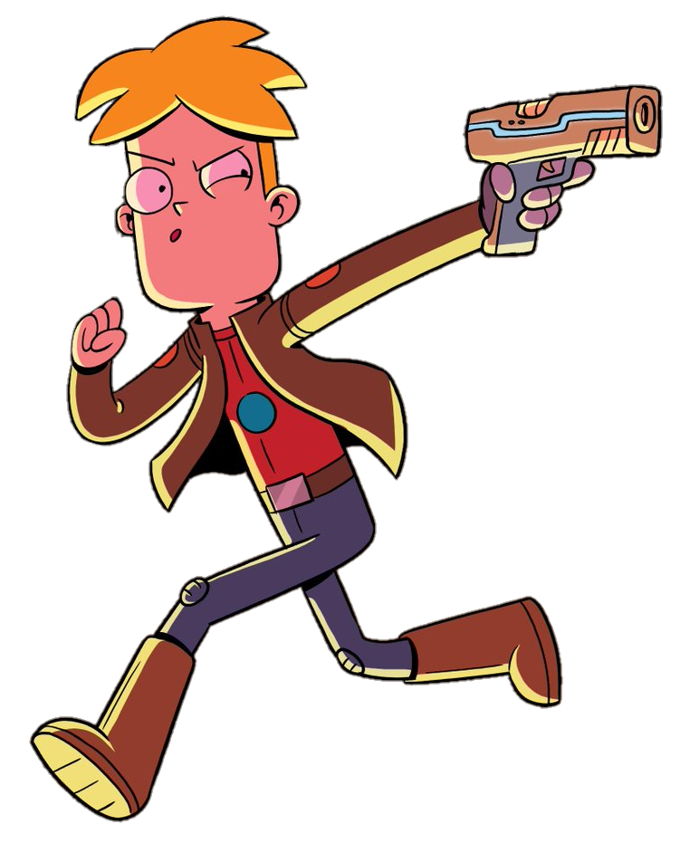
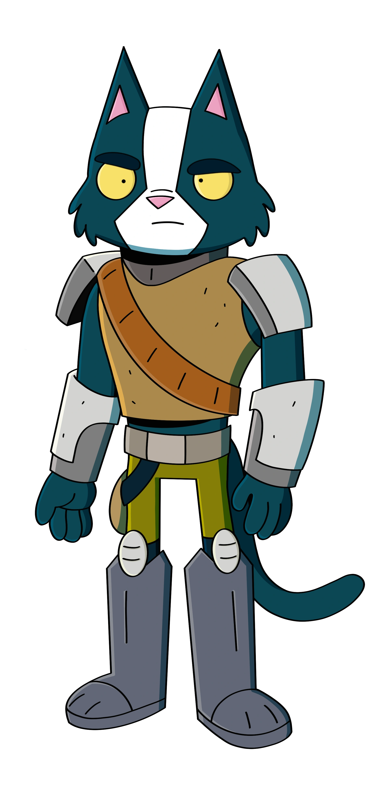
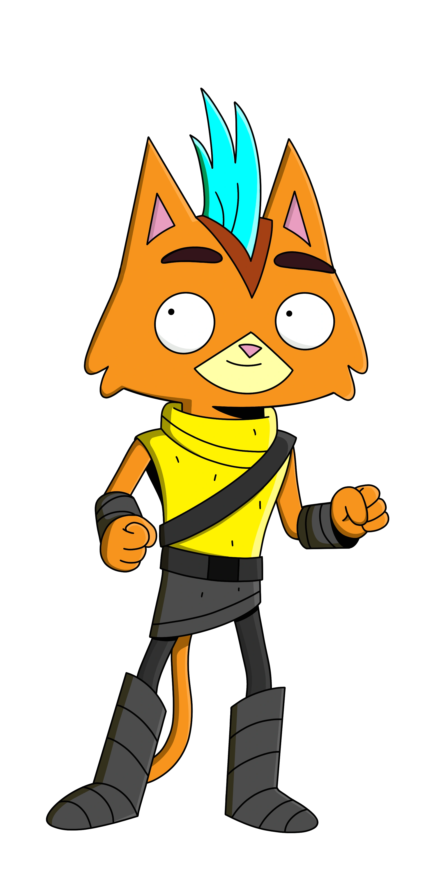
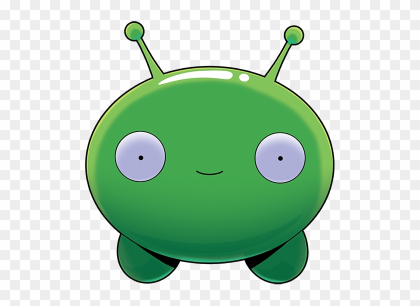
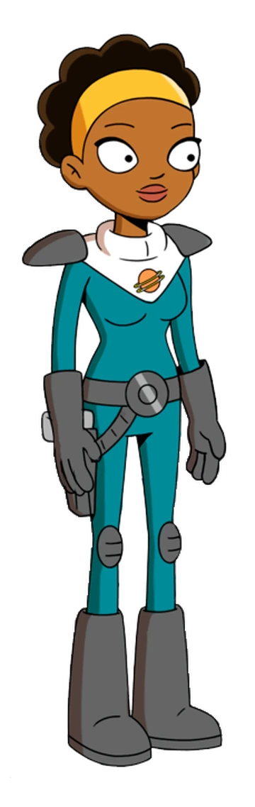
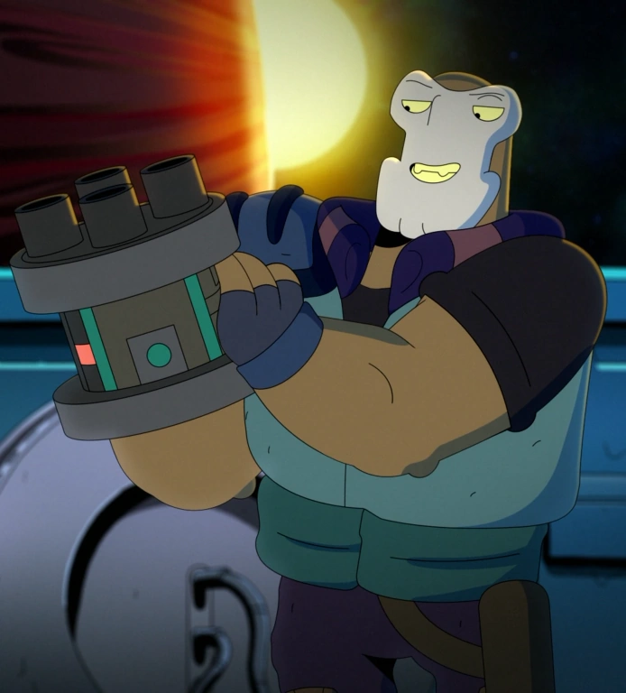
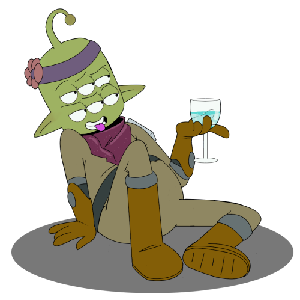
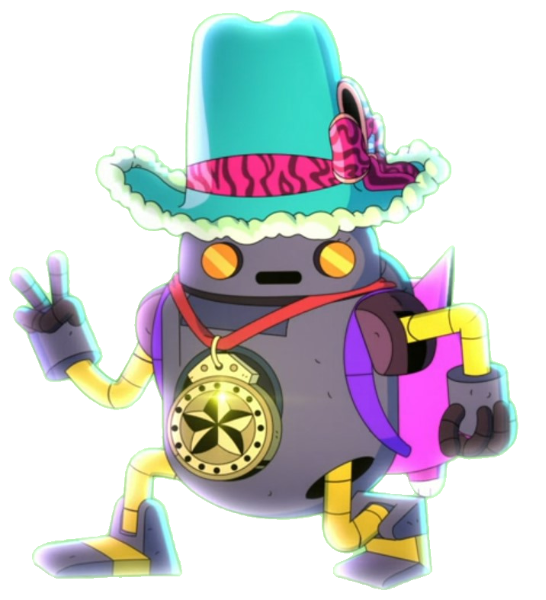
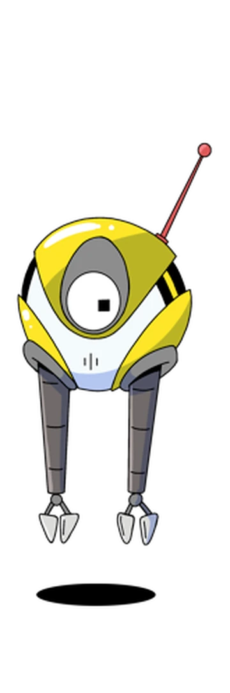

<!DOCTYPE html> 
<html lang="pt-br">
<head>
    <meta charset="UTF-8">
    <meta name="viewport" content="width=device-width, initial-scale=1.0">
    <title>Final Space</title>
    <link rel="stylesheet" href="css/reset.css">
    <link rel="stylesheet" href="css/meuestilo.css">
</html>
    <body>
        <header class="cabecalho">
            <div class="logo" id="logo">
                
        </div>
        <nav id=menu>
            <ul>
                <li><a href="index.html"> = Personagens = </a></li>
                <li><a href="Enredo.html"> = Enredo = </a></li>
                <li><a href="Sinopse.html"> = Sinopse = </a></li>
                <li><a href="#"> = Curiosidades = </a></li>
                <li><a href="#"> = Antagonistas = </a></li>
            </ul>
        </nav>
    </header>
    <main>

        <section id="figure">

            <h1 style="color: goldenrod;" class="titulo">Gary Goodspeed</h1>
                <p>Gary Goodspeed é um astronauta enérgico, mas estúpido, que, no meio do trabalho dos últimos dias de sua sentença de cinco anos a bordo da espaçonave prisão Galaxy One , encontra um misterioso alienígena destruidor de planetas. Ele faz amizade com o alienígena, chamando-o de Mooncake, e então descobre que eles estão sendo perseguidos pelo sinistro e telecinético Senhor Comandante. Juntos, Gary e Mooncake embarcam em uma missão para salvar o universo, com a ajuda da inteligência artificial HUE e de uma tripulação crescente de companheiros de bordo, cada um com seus próprios problemas pessoais, tudo isso enquanto tentam desvendar os segredos que cercam o Final Space, um reino bizarro onde o universo acaba.</p>

                <div class="caixa-img">
                    <figure>
                        
                        <figcaption>Garry Goodspeed</figcaption>
                    </figure>
                </div>

        </section>

        <section>
            
            <h2 style="color: rgb(0, 84, 112);" class="titulo">Avocato</h2>
                <p>Avocato é um dos dois tritagonistas (ao lado de Little Cato) de Final Space . Ele é um ex- general Ventrexiano e ex-segundo em comando do Senhor Comandante . Ele é habilidoso, perigoso e nem sempre confiável</p>
                <div class="caixa-img">
                    <figure>
                        
                        <figcaption>Avocato</figcaption>
                    </figure>
                </div>

        </section>        

        <section> 
            
            <h2 style="color: rgb(252, 185, 61);" class="titulo">Little Cato</h2>
                <p>Little Cato é um dos dois tritagonistas (ao lado de Avocato ) de Final Space . Ele é um ventrexiano de 14 anos e filho adotivo de Avocato e Gary Goodspeed .</p>

                <div class="caixa-img">
                    <figure>
                        
                        <figcaption>Little Cato</figcaption>
                    </figure>
                </div>
        </section>

            <section>
                <h2 style="color: lime;" class="titulo">Mooncake</h2>
                <p>Mooncake é uma anomalia espacial destruidora de planetas que foi criada pela energia residual da explosão de uma bomba de antimatéria que fechou um portal para o Espaço Final . Pouco depois, ele foi descoberto perto de uma supernova a bordo do Scarlet Lance , de onde logo fugiu e conheceu Gary Goodspeed , um prisioneiro mantido sozinho no Galaxy One , que deu o nome de Mooncake em homenagem a uma lagarta que ele teve quando criança. Com os dois rapidamente se tornando aliados próximos, Mooncake se junta a Gary (e ao Team Squad em breve expansão ) para salvar o universo dos Titãs , do Senhor Comandante e de Invictus , todos os quais procuram usar Mooncake para ganhar ainda mais poder e estabelecer desperdício para o universo.</p>

                <div class="caixa-img">
                    <figure>
                        
                        <figcaption>Mooncake</figcaption>
                    </figure>
                </div>

        <section>
            
            <h2 style="color: darkkhaki;" class="titulo">Quinn Ergon</h2>
                <p>Quinn Ergon é um grande protagonista em Final Space . Ela é uma oficial espacial que cruza o caminho de Gary em sua missão de fechar uma brecha no Espaço Final.</p>
                
                <div class="caixa-img">
                    <figure>
                        
                        <figcaption>Quinn Ergon da primeira temporada</figcaption>
                    </figure>
                </div>

        </section>

        <section>

            <h2 style="color: lightblue;" class="titulo">Fox</h2>
                <p>Fox Polkawitz foi um Tryvuuliano que se juntou ao Team Squad desde a 2ª temporada até sua morte em " One of Us ". Ele era irmão adotivo de Ash Graven e filho adotivo de Clarence . Ex-soldado que foi forçado a lutar e fugiu de seu passado, Fox era conhecido por ser muito cabeça quente e infantil, mas também se mostrava muito sensível e gentil com seus amigos, apesar de sua aparência imponente.</p>
                
                <div class="caixa-img">
                    <figure>
                        
                        <figcaption>Fox antes de sua morte</figcaption>
                    </figure>
                </div>

        </section>

        <section>

            <h2 style="color: rgb(114, 190, 0);" class="titulo">Tribore Menéndez</h2>
                <p>Tribore Menéndez é um dos personagens coadjuvantes de Final Space. Ele é um alienígena verde de seis olhos que anteriormente foi membro da Guarda do Infinito , antes de desertar e se tornar o líder da Resistência . Ele pode não ser a ferramenta mais afiada do galpão, mas tem sua lealdade.</p>
                
                <div class="caixa-img">
                    <figure>
                        
                        <figcaption>Tribore após sua entrada na rebelião</figcaption>
                    </figure>
                </div>

        <section>

                <h2 style="color: rgb(93, 209, 255);" class="titulo">H.U.E</h2>
                <p>Entidade Unificada Heurística (abreviada como HUE ) é um dos personagens principais de Final Space . HUE foi criado como a inteligência artificial do Galaxy One , atuando como uma espécie de "diretor da prisão" para Gary Goodspeed . Pouco depois da Batalha pela Terra, ele é forçado a habitar o corpo de um robô de lixo após a destruição do Galaxy One. Eventualmente, HUE é capaz de deixar seu corpo de robô e se tornar uma IA novamente para o Galaxy Dois . Seu corpo de robô foi reconstruído e atualizado graças ao Biskit, mas ainda não se sabe com que frequência ele o usará.</p>
                
                <div class="caixa-img">
                    <figure>
                        
                        <figcaption>H.U.E em seu corpo robótico</figcaption>
                    </figure>
                </div>

        </section>

            <h2 style="color: rgb(165, 154, 0);" class="titulo">KVN</h2>
                <p>KVN foi designado para Gary Goodspeed como companheiro para evitar Insanidade no espaço profundo quando este último foi condenado a cinco anos de prisão a bordo do Galaxy One . Seu trabalho era fazer companhia a Gary e preservar sua sanidade, já que Gary passaria esses cinco anos como o único tripulante humano do navio. No entanto, as travessuras de KVN imediatamente fizeram Gary desenvolver uma forte aversão pelo robô, e isso não mudou nos cinco anos que passaram juntos. Gary freqüentemente expressa hostilidade em relação a ele regularmente.</p>
                
                <div class="caixa-img">
                    <figure>
                        
                        <figcaption>K.V.N da segunda temporada</figcaption>
                    </figure>
                </div>
            
        </section>
    </main>
    <footer class="rodape">
        <p>Made by Brayan C.</p>
    </footer>

    </body>
</head>
</html>
